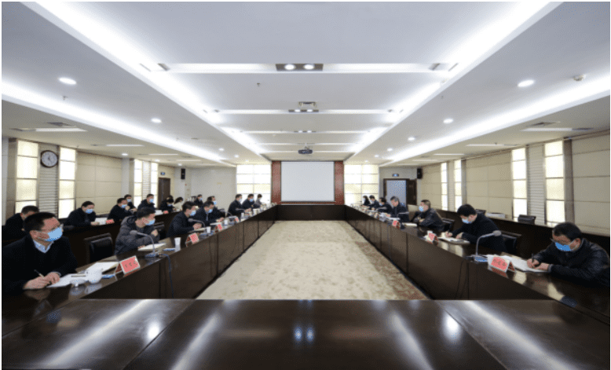
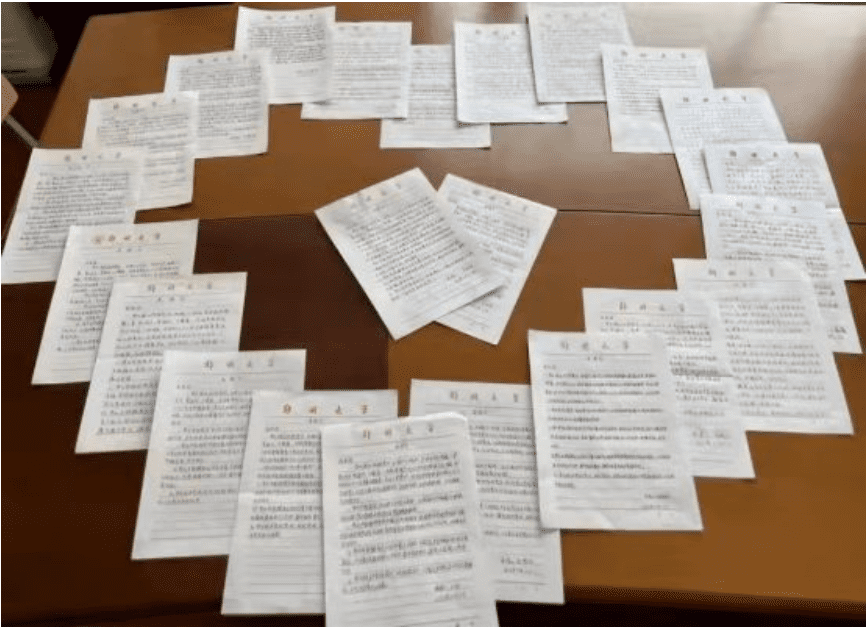
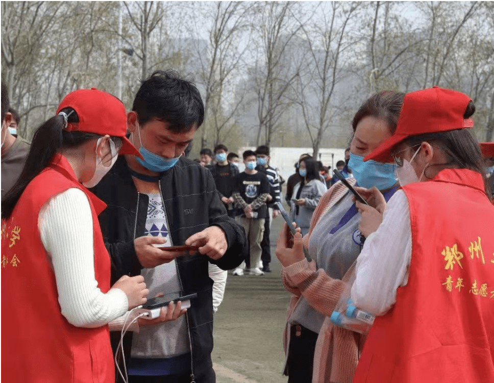

郑州大学：同心抗疫 共待春晖
3月11日，郑州大学发布《疫情防控措施紧急提醒》，并向广大师生发出《你我同心抗疫，静待樱花盛开》的倡议书，号召大家“同心坚守，共待春晖”。
3月18日，为防范严重疫情校园隐匿传播风险，郑州大学紧急实施校园封闭管理，禁止跨校区流动，暂停校园内聚集性活动，关闭非必需开放的公共空间，推进物理空间“网格”管理，从严从细抓实抓好校园疫情防控。
3月以来，面对全国疫情防控的严峻形势，郑州大学迅速进入战时状态，严防出现校园疫情，守护广大师生生命健康。
防疫工作放到首位，压实三方责任
面对疫情防控严峻形势，郑州大学高度重视、立即行动、全面部署，把防疫工作放在第一位抓实抓细，坚决压实校领导、二级单位和师生三方责任。
压实校领导责任。学校多次召开不同层面、不同范围的疫情防控工作会议，分析研判学校疫情防控形势，部署常态化疫情防控和应急处置工作，最大程度减少疫情对正常教育教学秩序的影响，统筹好疫情防控和学校各项事业发展。
压实二级单位责任。学校要求各二级单位坚决克服麻痹思想和侥幸心理，扛牢责任，勇于担当，党员干部带头下沉一线，查找现存风险，全力查缺补漏，优化、细化、强化各项防控措施，管好自己的人、管住单位的门，做到守土负责、守土尽责。
压实师生责任。师生作为自身健康第一责任人，要做到“三个主动”，主动向学校和属地报告健康状况、离返郑情况，主动配合落实学校和属地各项疫情防控措施，主动做好个人防护和家庭防护、杜绝疫情高风险行为。全校广大团学干部和青年志愿者秉持全心全意为学生服务的宗旨，敢为人先，冲锋在前，全力参与学校防疫工作，为疫情防控工作贡献一己之力。
织密扎牢校园防线，强化六项管理
为将疫情扑灭在萌芽状态，郑州大学持续筑牢防控防线，进一步强化校园管理，严格落实报备、流调、管控、上报、检测等措施，对密接、次密接人员进行赋码管理、健康监测，及时堵塞漏洞、补齐短板，坚决阻断疫情进入校园。
强化校门管理。严格执行校园封闭管理紧急通告，教育引导督促师生员工落实封闭管理各项要求，严格师生赋码管理，严肃赋码审批，谢绝校外人员入校，严把校门关，筑牢疫情防控屏障。
强化网格化管理。做好单元化管理和人员分类管理，各学院主管学生工作副书记和辅导员入住宿舍，加强夜间巡检，同时深入教室、深入宿舍、深入操场，坚持多个网格交叉发力，织密织牢防控网。
强化日常流动闭环管理。坚持实行“日报告，零报告”，利用常态化精准防疫平台抓好师生日常健康状况、行程轨迹的统计监测，督促监督师生不“设饭摊”、不“坐坐”聚餐、不聚会。
强化返郑人员管理。严格落实“非必要不出郑”“暂停出差”等要求，细致摸排本单位返郑人员，及时准确做好统计报告，实行重点监测、重点抽检，把风险降到最低。
强化聚集性活动管理。全校各类会议坚持“非必要不召开”，学生就餐错峰限流，取快递实施单一流向、设置一米等候线，避免形成聚集，加强快递等物品的二次消杀管理，落实人物环境同防。
强化应急管理。发挥好“一校一院”作用，落实好“两触发”机制，为做好学生突发情况应急防疫进行工作演练，从而提高学生的防疫意识和应急处置能力。
用心用情关爱师生，做好三个服务
针对疫情防控可能带来的衍生问题，郑州大学组织召开不同层面的师生座谈会，用心倾听广大师生的心声，及时回应师生合理诉求与关切，不断提高防控决策的严谨性、科学性，突出防控措施的灵活性和人性化，做到师生之间的心意相融、双向奔赴，赢得广大师生对疫情防控工作发自内心的理解与支持。
做好防疫科普服务。学校利用展板、橱窗、网站、新媒体等各类宣传教育平台，常态化加强疫情防控形势和政策措施的宣传教育和科普工作，在校园网发布《今日疫情通报》《疫情防控期间生活健康指南》，及时告知师生疫情动态信息，引导全校师生同心抗疫，为坚持就是胜利营造了良好的舆论氛围。
做好基本保障服务。学校进一步充实防控力量，保证口罩、消毒液、防护服等防疫物资储备，预留足够的隔离场所和空间。校园封闭管理期间，超市储备足量的生活用品，食堂丰富餐饮品种类别，更好地满足大家就餐、购物等生活需求，为科学防疫提供有力物资支撑。
做好全方位关爱服务。在严格执行防疫措施的同时，学校及各二级单位着力做好学生教育管理、生活学习服务保障和心理健康教育引导等关爱关怀工作，心理健康教育中心开设24小时在线的“关怀通道”，各学院在线开展形式多样的“同心抗疫”主题班会，讲解学校关于疫情管控的相关规定和措施，部分学院领导班子和辅导员还通过给同学们写寄语、发放关爱礼包，为学生送去温暖，引导广大学生遵守防疫规定，勠力同心、共克时艰。在转入线上教学后，各单位第一时间制定线上教学紧急预案，引导教师积极发挥线上网络课程平台的优势，开展“线上教学”和“在线学习指导”。为帮助考研学子圆梦，学校发布了《关于认真做好学生考研复试服务工作的通知》，充分挖掘物理空间，为有需求的校内考生提供考研面试房间。
河南日报客户端记者: 史晓琪 通讯员 李林洁
责任编辑：史晓琪